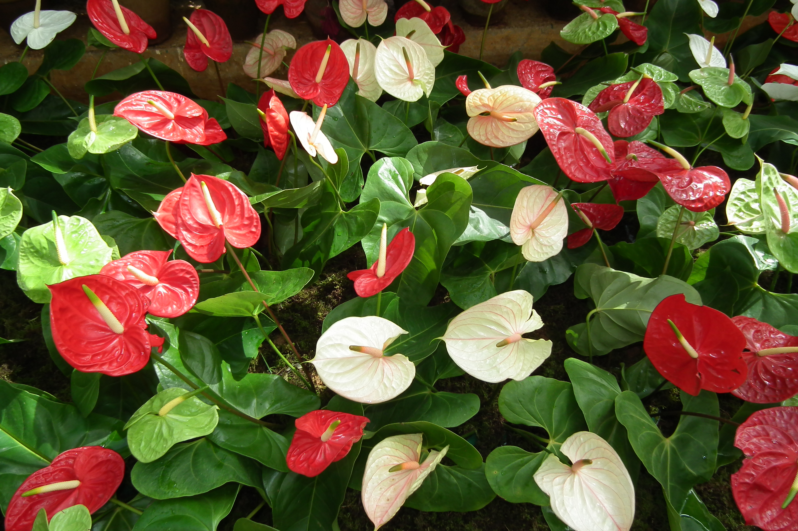

Roses
la rose est la fleur du rosier, c'est la fleur la plus connue et apprecier depuis l'Antiquité grâce à sa beauté et son parfum. La rose est l’une des plantes les plus cultivées au monde et elle occupe la première place dans le marché des fleurs.
Genre et famille :
Rosa ,Rosaceae
Autres fleurs des éspèces du genre: Rosa
Cardinal de Richelieu, Cuisse de Nymphe émue